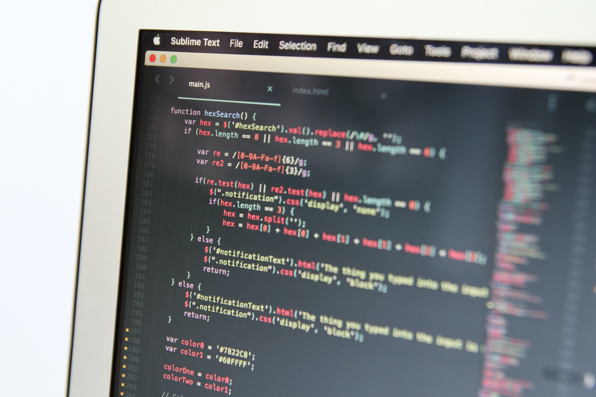
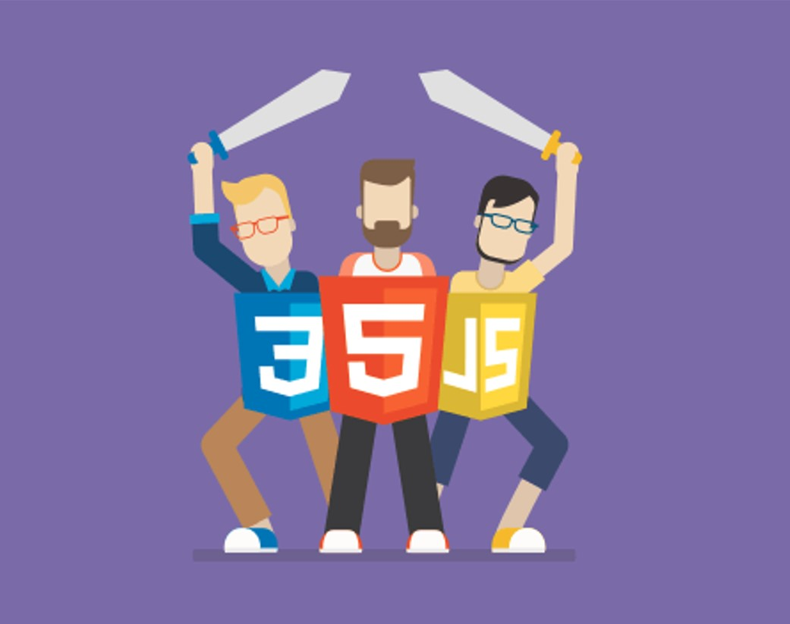

¿Que es la programación web y para que sirve?
La programación de los sitios web es una de las disciplinas dentro del mundo de Internet que más se ha desarrollado y no deja de sorprender día a día con las posibilidades que abre y genera, ya que no sólo consigue satisfacer necesidades que se generan, sino que sin la generación de necesidades ofrecen servicios a los usuarios que éstos no habían imaginado.Los sitios web, por lo general, se tratan de páginas que solo muestran información. Los ejemplos clásicos son los sitios que pueden ser diseñados y publicados por medio de un sistema de gestión de contenidos (CMS por sus siglas en inglés).
Algunos ejemplos de ellos son: WordPress y Joomla. En cambio, las aplicaciones web consisten en el desarrollo de un software complejo que requiere la utilización de uno o más lenguajes de programación y conocer la estructura de la programación web. Algunos ejemplos: Google Drive, Spotify web, WhatsApp web, etcétera. Sin entrar en detalles técnicos, los fundamentos de la programación web se basan en un patrón llamado MVC (Modelo, controlador, vista).

Front End y Back End son dos términos que las empresas escuchan mucho al momento de trabajar o empezar proyectos con áreas de tecnología, desarrollo de productos e innovación. Estos términos son muy importantes para el desarrollo web, pero son bastante diferentes entre sí. Cada lado debe comunicarse y operar de manera efectiva con el otro como una sola unidad para mejorar la funcionalidad del sitio web. Además de ser importantísimos en la creación de sitios web y apps, estas dos especialidades se diferencian en la tecnología que tendrás que usar e, inclusive, en cuánto dinero solicitarán como remuneración.
Front End
La parte de un sitio web con la que el usuario interactúa directamente se denomina interfaz. También se conoce como el "lado del cliente" de la aplicación. Incluye todo lo que los usuarios experimentan directamente: colores y estilos de texto, imágenes, gráficos y tablas, botones, colores y menú de navegación. HTML, CSS y JavaScript son los lenguajes utilizados para el desarrollo de Front End. Las personas desarrolladoras front-end implementan la estructura, el diseño, el comportamiento y el contenido de todo lo que se ve en las pantallas del navegador cuando se abren sitios web, aplicaciones web o aplicaciones móviles. La capacidad de respuesta y el rendimiento son dos objetivos principales del Front End.
Back End
Back End se refiere al proceso del servidor y más recientemente procesos en la nube del sitio web. La desarrolladora de Back End es la encargada del sistema que recoge y guarda información y la organizar. Es decir, todo aquello con lo que el usuario no interactúa directamente; por ejemplo, las APIs o paquetes de aplicaciones, las librerías y componentes del sistema. La parte de back-end se crea utilizando algunos lenguajes que se describen a continuación:
- PHP
- Java
- Python
- JavaScript
- Node.Js
Diferencia entre frontend y backend
El desarrollo de frontend y backend son bastante diferentes entre sí, pero aún así, son dos aspectos de la misma situación. El frontend es lo que los usuarios ven e interactúan y el backend es cómo funciona todo.
El frontend es la parte del sitio web con la que los usuarios pueden ver e interactuar, como la interfaz gráfica de usuario (GUI) y la línea de comandos, incluido el diseño, menús de navegación, textos, imágenes, videos, etc. El backend, por el contrario, es el parte del sitio web que los usuarios no pueden ver e interactuar. Los aspectos visuales del sitio web que los usuarios pueden ver y experimentar son frontend. Por otro lado, todo lo que sucede en segundo plano se puede atribuir al backend. Los lenguajes utilizados para el front-end son HTML, CSS, JavaScript, mientras que los utilizados para el backend incluyen Java, Ruby, Python, .Net.